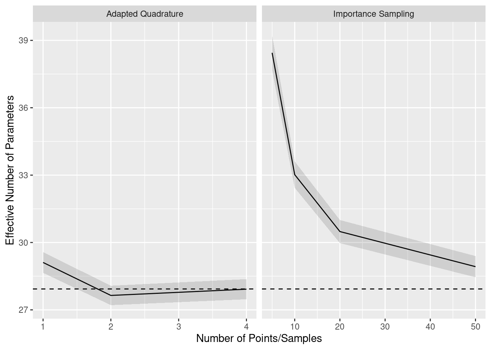

![]()
HS.model <- ' visual =~ x1 + x2 + x3
textual =~ x4 + x5 + x6
speed =~ x7 + x8 + x9 '
## continuous data:
dcont <- simulateData(HS.model, sample.nobs=200)
## chopped up to yield 3-category ordinal data
## (this is a custom function that appears in the Rmd):
Data <- makeord(dcont, ncat = 3)This page contains information about computing (approximating) likelihoods of structural equation models with ordinal variables. We consider interactions between theoretical results and computational issues, and we also consider the influence of likelihood approximations on information criteria like WAIC. Finally, we discuss how blavaan handles related issues.
Introduction
SEMs with ordinal variables can have at least two types of latent variables. The first type, which is a hallmark of SEM, represents unobserved traits of the individuals (of the “clusters”) in our dataset. These latent variables are very similar to random effects in mixed models, and they are sometimes exactly the same as random effects in mixed models.
The second type of latent variable involves the fact that we have ordinal observed data. For these models, we typically assume continuous variables underlying the ordinal data, which are chopped to yield ordered categories. But these continuous variables are unobserved, so that they can be called latent variables. The famous data augmentation algorithms described by Albert and Chib (1993) and Chib and Greenberg (1998) involve generating these continuous variables as though they are extra parameters, which makes it easier to estimate the rest of the model.
When we define a model likelihood, we often opt to integrate out the latent variables so that we no longer have to worry about estimating them (the integration is also known as marginalizing or averaging over the latent variables). This means that a single model can have many likelihoods associated with it, depending on what we integrate out. For a single SEM with ordinal data, there are at least four likelihoods that may be used. While all four likelihoods would lead to the same parameter estimates, they could yield different information criteria, posterior predictive checks, and model fit assessments (see Merkle, Furr, and Rabe-Hesketh 2019 for related discussion). The goal of this document is to outline computation of various likelihoods, and to consider their involvement in information criterion computations.
Model Setup
We assume data vectors \(\boldsymbol{y}_i\) of length \(p\), \(i=1,\ldots,n\), where all \(p\) variables are ordinal. As mentioned above, the typical SEM assumes continuous, latent data vectors \(\boldsymbol{y}^\ast_i\) underlying the ordinal data. The model then goes on these continuous data vectors. The LISREL-style model formulation is \[\begin{align} \boldsymbol{y}^\ast_i &= \boldsymbol{\nu} + \boldsymbol{\Lambda} \boldsymbol{\eta}_i + \boldsymbol{\epsilon}_i \\ \boldsymbol{\eta}_i &= \boldsymbol{\alpha} + \boldsymbol{B \eta}_i + \boldsymbol{\zeta}_i, \end{align}\] where the residual vectors \(\boldsymbol{\epsilon}_i\) and \(\boldsymbol{\zeta}_i\) are assumed to be multivariate normal with mean \(\boldsymbol{0}\). For models with ordinal variables, the covariance matrix associated with \(\boldsymbol{\epsilon}_i\) is typically diagonal. The \(\boldsymbol{\eta}_i\) are the traditional SEM latent variables (the “first type” that we discussed at the start of the document), and the remaining vectors and matrices contain model parameters.
To get back to the observed, ordinal data, we add threshold parameters \(\boldsymbol{\tau}\) that chop the continuous variables. For example, in the case of an ordinal \(y_{ij}\) with four categories, we would have \[\begin{align*} y_{ij} = 1 &\text{ if }y^*_{ij} < \tau_{j1} \\ y_{ij} = 2 &\text{ if }\tau_{j1} <\ y^*_{ij} < \tau_{j2} \\ y_{ij} = 3 &\text{ if }\tau_{j2} <\ y^*_{ij} < \tau_{j3} \\ y_{ij} = 4 &\text{ if }y_{ij}^* >\ \tau_{j3}, \end{align*}\] where \(\tau_{j1} < \tau_{j2} < \tau_{j3}\).
Model Likelihoods
If each element of \(\boldsymbol{y}_i\) were independent of the other elements, it would be simple to write the model likelihood as a product of multinomial distributions (where the multinomial \(n\) parameter is fixed to 1, sometimes called a categorical distribution). But the elements of \(\boldsymbol{y}_i\) are typically not independent, so we have to do something extra to obtain the model likelihood. The specific “something extra” that we choose leads to different likelihoods. Here are some possibilities:
- Sample the traditional latent variables \(\boldsymbol{\eta}_i\) during MCMC. Conditioned on these latent variables, the elements of \(\boldsymbol{y}_i\) are usually independent, so that computation of the (conditional) likelihood is easy. It is a product of multinomials.
- Approximate the joint likelihood of all elements of \(\boldsymbol{y}_i\). This involves integrating over \(\boldsymbol{y}^\ast_{i}\), which is multivariate normal. The integration limits are determined by the \(\boldsymbol{\tau}\) parameters, so it amounts to repeatedly evaluating the cumulative distribution function of a multivariate normal. It is a difficult problem but has received a good amount of attention in the literature.
- Focus on the distribution of the \(\boldsymbol{y}^\ast_i\) instead of the observed \(\boldsymbol{y}_i\). This is a multivariate normal distribution. Further, if we sample the \(\boldsymbol{\eta}_i\) during MCMC, then this is a series of univariate normal distributions.
Traditional MCMC algorithms for ordinal SEM take the first approach, sampling latent variables alongside other parameters. This can be problematic for large \(n\), because the number of latent variables increases with \(n\) and leads to slow sampling. Further, the “number of parameters increases with sample size” issue means that some theoretical, asymptotic properties of information criteria are no longer guaranteed (see Merkle, Furr, and Rabe-Hesketh 2019 for more detail). For these reasons, blavaan avoids sampling the \(\boldsymbol{\eta}_i\) during model estimation. See Merkle et al. (2021) for details involving models with continuous data.
The blavaan approach to estimating these models (currently) involves the third option. Similar to Chib and Greenberg (1998), we generate the continuous \(\boldsymbol{y}^\ast_i\) underlying the ordinal observed variables and then work with a multivariate normal likelihood. And we avoid sampling the \(\boldsymbol{\eta}_i\) during model estimation (though they can be sampled as a by-product of model estimation).
Even though we use the \(\boldsymbol{y}^\ast_i\) for estimation, it is not good to use the distribution of \(\boldsymbol{y}^\ast_i\) for information criteria and posterior predictive checks. This is because the \(\boldsymbol{y}^\ast_i\) are basically extra parameters, so they influence effective number of parameter computations for DIC, WAIC, PSIS-LOO, and related metrics. (Side note: if you see an effective number of parameters value that is larger than \(n\), it is likely that a suboptimal information criterion is being used.) Therefore, for likelihood-based model summaries and information criteria, we carry out the approximation described in #2 after MCMC estimation. This leads to longer post-estimation computation times, but we believe they are the best default metrics to use.
Approximating the Distribution of \(y_i\)
The distribution of \(\boldsymbol{y}_i\) requires us to integrate the multivariate normal distribution across limits determined by the observed data and the \(\boldsymbol{\tau}\), which is a computationally expensive activity. And, for metrics like WAIC and PSIS-LOO, we must compute this density for each case \(i\) (or for each response pattern), for each posterior sample. So we find ourselves in a familiar situation where we must trade off computational accuracy with computational speed. There exist multiple options for approximating the integral, and we want to know what option will provide the most accurate approximation the fastest. The options we consider are
Adapted Gauss-Hermite Quadrature: Because we are carrying out the computations after model estimation, we can have access to samples of the latent variables \(\boldsymbol{\eta}_i\). This allows us to make informed choices about quadrature points for each case \(i\) (again see Merkle, Furr, and Rabe-Hesketh 2019) so that the procedure is “already adapted” instead of “adaptive”. As the number of quadrature points increases, adaptive Gauss-Hermite quadrature is often treated as the gold standard approximation. But large numbers of quadrature points are computationally expensive.
Importance Sampling of \(\boldsymbol{y}^\ast_i\): In R, there exist importance sampling algorithms (notably, the GHK algorithm) for evaluating the multivariate normal CDF. To do this, blavaan uses the
tmvnsim()function from the tmvnsim package. The function generates samples from the distribution of \(\boldsymbol{y}^\ast_i\) and, as a by-product, produces an approximation of the likelihood of \(\boldsymbol{y}_i\). Larger numbers of importance samples lead to more accurate approximations, similarly to larger numbers of quadrature points.Adaptive Subregion Integration: This is a Fortran program provided by Genz (e.g., Genz 1992) and included in the R package mnormt (Azzalini and Genz 2020) via the
sadmvn()function. It involves separately approximating subregions of the domain of integration, then performing extra approximations in subregions with high error.
For almost all traditional SEMs, the dimension of \(\boldsymbol{\eta}_i\) is less than the dimension of the \(\boldsymbol{y}^\ast_i\), suggesting that quadrature is advantageous (because quadrature integrates over \(\eta\), and others integrate over \(y^\ast\)). But the quadrature method must be designed specifically for SEM, whereas evaluation of the multivariate normal CDF is a general problem with many efficient, existing software implementations. We carry out some relevant analyses below, but we first illustrate the different computational methods that we can obtain from blavaan.
Likelihood Computations in blavaan
We now illustrate subregion integration, importance sampling, and adapted quadrature in blavaan. We focus on evaluating likelihoods of the \(\boldsymbol{y}_i\); the likelihoods of \(\boldsymbol{y}^\ast_i\) are simple multivariate normals.
The chunk below involves the usual 3-factor, 9 variable CFA example. When the observed variables are ordinal, we might call it an item factor analysis model. Using lavaan, we specify the model and generate fake data via
Next, we estimate the model in blavaan and specify save.lvs = TRUE. We need estimates of latent variables for some post-estimation computations.
fit <- bcfa(HS.model, data=Data, sample=500, burnin=500, ordered=TRUE, std.lv=TRUE,
save.lvs=TRUE, dp = dpriors(lambda = "normal(1,.5)"), seed = 123)Conditional Log-Likelihood
From here, we need to use a few blavaan functions that are not exported (because we don’t expect users to routinely need them). We will extract the first posterior sample (including latent variables), then compute casewise likelihoods for that posterior sample. We start with likelihoods that are conditional on \(\boldsymbol{\eta}_i\), which are easier. Then we move to marginal likelihoods.
Conditional likelihoods can be computed using the non-exported function get_ll(), as below.
## all posterior samples
samps <- do.call("rbind", blavaan:::make_mcmc(fit@external$mcmcout, fit@external$stanlvs))
## casewise, conditional (on eta) log-likelihood of the first posterior sample
cll1 <- blavaan:::get_ll(postsamp = samps[1,], fit,
casewise = TRUE, conditional = TRUE)We show a little bit more about what is happening using the chunk below. We first arrange the posterior sample in model matrices. We then compute casewise log-likelihoods by taking advantage of the fact that the observed variables are independent conditioned on the latent variables. This allows us to compute response probabilities via a series of calls to pnorm(). Those response probabilities then enter into the likelihood on the last line.
## create model matrices using the first posterior sample
lavmod <- blavaan:::fill_params(samps[1,], fit@Model, fit@ParTable)
## vector of all latent variables
etasamps <- samps[1,grep("^eta", colnames(samps))]
## casewise log-likelihoods
mancll <- rep(NA, nobs(fit))
for(i in 1:nobs(fit)){
## conditional means
etas <- etasamps[((i-1)*3 + 1):(i*3)]
tmpmn <- lavmod@GLIST$lambda %*% etas
## thresholds for observation ij
lot <- hit <- rep(NA,9)
for(j in 1:9){
tmptau <- c(-Inf, lavmod@GLIST$tau[((j-1)*2 + 1):(j*2)], Inf)
lot[j] <- tmptau[Data[i,j]]
hit[j] <- tmptau[Data[i,j] + 1]
}
## log-likelihood
tmpcatprob <- pnorm(hit, mean = tmpmn) - pnorm(lot, mean = tmpmn)
mancll[i] <- sum(dbinom(1, size=1, prob=tmpcatprob, log=TRUE))
}And the plot below confirms that these computations are the same as what was provided by get_ll().
plot(cll1, mancll, xlab="get_ll()", ylab="manual calculation"); abline(0,1)Marginal Log-Likelihood
To approximate the marginal log-likelihood, blavaan currently has two built-in options: subregion adaptive integration (default) and importance sampling. To use importance sampling, users must supply the number of desired samples in the model estimation call (via llnsamp; see here for details, which partially repeats what is stated here).
## casewise, marginal log-likelihood of the first posterior sample
## using the Genz method
mll1 <- blavaan:::get_ll(postsamp = samps[1,], fit, casewise = TRUE)
## casewise, marginal log-likelihood using importance sampling
fit@Options$llnsamp <- 50 ## triggers use of importance sampling
iml1 <- blavaan:::get_ll(postsamp = samps[1,], fit, casewise = TRUE)And the chunk below shows more about how these computations are done. We first obtain the model-implied mean vector and covariance matrix for the \(\boldsymbol{y}^\ast_i\). Then lower and upper bounds are determined by the observed data. Finally, these variables are sent to sadmvn().
## create model matrices using the first posterior sample
lavmod <- blavaan:::fill_params(samps[1,], fit@Model, fit@ParTable)
## model-implied mean and cov matrix
impl <- lav_model_implied(lavmod, delta = FALSE)
## casewise log-likelihoods
manmll <- rep(NA, nobs(fit))
for(i in 1:nobs(fit)){
## thresholds for observation ij
lot <- hit <- rep(NA,9)
for(j in 1:9){
tmptau <- c(-Inf, lavmod@GLIST$tau[((j-1)*2 + 1):(j*2)], Inf)
lot[j] <- tmptau[Data[i,j]]
hit[j] <- tmptau[Data[i,j] + 1]
}
## log-likelihood via Genz method
tmpsamp <- sadmvn(lot, hit, mean = impl$mean[[1]], varcov = impl$cov[[1]], abseps = 1e-2)
manmll[i] <- log(tmpsamp)
## log-likelihood via tmvnsim
## tmpsamp <- tmvnsim(50, 9, lower = lot, upper = hit, means = impl$mean[[1]],
## sigma = impl$cov[[1]])
## manmll[i] <- log( mean(tmpsamp$wts) )
}And the plot below confirms that we are obtaining the same values that we obtained via blavaan’s built-in computations.
plot(mll1, manmll, xlab="get_ll()", ylab="manual calculation"); abline(0,1)We can also use “adapted” quadrature to approximate the marginal likelihood. First, we use the estimated posterior means and covariances of the \(\boldsymbol{\eta}_i\) to adapt the quadrature nodes and weights to each case \(i\). Then we repeatedly evaluate the conditional likelihood at each node. Finally, the marginal likelihood is a weighted sum of the conditional likelihoods. The code exists in blavaan to do this for certain models, but it is currently unused. It can be run as below.
qmll <- blavaan:::adapted_ghq(fit, ngq = 5, samprow = 1)This function is repeatedly evaluating the conditional likelihood that we used earlier (see the previous chunk involving pnorm() commands), then averaging over the evaluations. The quadrature method defines the latent variable values at which we evaluate the conditional likelihood, and it defines the weights involved in the (weighted) average. The plot below shows that it yields results that are similar to what we obtained from get_ll() (which used the Genz method).
plot(mll1, qmll, xlab="get_ll()", ylab="genz"); abline(0,1)Implications for Information Criteria
All of the above illustrations involved casewise likelihoods for a single posterior sample. If we are to obtain information criteria like WAIC and PSIS-LOO, we need to compute these casewise likelihoods for each posterior sample. This is computationally heavy, especially for information criteria that involve the marginal likelihood (which is the best general option). Say that we have a dataset of 300 individuals, and we save 1,000 posterior samples for each of three chains. If it takes one second to evaluate each posterior sample, then it will take 50 minutes to evaluate all 3,000 posterior samples. It is clear that we need to be as economical as possible, while still doing accurate computations.
We want to know how crude our marginal likelihood approximations can be without sacrificing accuracy. So we approximate the likelihood in various ways and compare the values of the resulting information criteria. Our gold standard is the adapted quadrature method with a large number of quadrature points. For the particular factor analysis model that we consider here, 7 points per dimension was sufficient (further numbers of points left the log-likelihoods virtually unchanged). We compared the gold standard to importance sampling with 5, 10, 20, and 50 samples per case, and to adapted quadrature with 1, 2, and 4 points per dimension.
## gold standard
gsll <- t(future_sapply(X = 1:nrow(samps),
FUN = function(i) blavaan:::adapted_ghq(fit, ngq = 7, samprow = i), future.seed = TRUE))
gsloo <- loo(gsll, r_eff = relative_eff(gsll, chain_id = rep(1:3, each = nrow(samps)/3)))impsamps <- c(5, 10, 20, 50)
qpts <- c(1, 2, 4)
isll <- vector("list", length(impsamps))
isloo <- vector("list", length(impsamps))
aqll <- vector("list", length(qpts))
aqloo <- vector("list", length(qpts))
fit@Options$llnsamp <- NULL
## genz subregion integration
gzl1 <- t(future_sapply(X = 1:nrow(samps),
FUN = function(j) blavaan:::get_ll(postsamp = samps[j,], fit, casewise = TRUE), future.seed = TRUE))
gzloo <- loo(gzl1, r_eff = relative_eff(gzl1, chain_id = rep(1:3, each = nrow(samps)/3)))
## importance sampling
for(i in 1:length(impsamps)) {
fit@Options$llnsamp <- impsamps[i]
isll[[i]] <- t(future_sapply(X = 1:nrow(samps),
FUN = function(j) blavaan:::get_ll(postsamp = samps[j,], fit, casewise = TRUE), future.seed = TRUE))
isloo[[i]] <- loo(isll[[i]], r_eff = relative_eff(isll[[i]], chain_id = rep(1:3, each = nrow(samps)/3)))
}
## adapted quadrature
for(i in 1:length(qpts)) {
aqll[[i]] <- t(future_sapply(X = 1:nrow(samps),
FUN = function(j) blavaan:::adapted_ghq(fit, ngq = qpts[i],
samprow = j), future.seed = TRUE))
aqloo[[i]] <- loo(aqll[[i]], r_eff = relative_eff(aqll[[i]], chain_id = rep(1:3, each = nrow(samps)/3)))
}The computed PSIS-LOO estimates are shown below, with the left panel being importance sampling results and the right panel being adapted quadrature results. The dashed line is the gold standard value, and the shading indicates 1 standard error above and below the PSIS-LOO estimates. We see that all estimates are within one standard error of the gold standard, providing possible evidence that we can get by with crude integral approximations.
The next graph, however, brings this evidence into question. This graph is arranged in the same way as the previous one, but it shows effective number of parameter estimates instead of the full PSIS-LOO estimates. We see that, for few importance samples and few quadrature points, the effective number of parameters is systematically over-estimated. We believe that this is because effective number of parameters is based on the variability of log-likelihoods, and the noise from crude integral approximations contributes extra variability. This suggests that, with crude approximations, the models are judged as being more flexible than they actually are.

Finally, the results of the Genz method (not shown) are practically equal to the results of the gold standard quadrature method, matching to one decimal point.
Conclusions
For the model considered here, the adaptive subregion integration method was as good as the gold standard quadrature method and also considerably faster. This is counterintuitive because the quadrature method was integrating over three dimensions, while the subregion method was integrating over nine dimensions. The speed difference probably reflects the methods’ implementations. The quadrature method was coded in R specifically for blavaan models and could be further optimized, whereas the adaptive integration method is coded in Fortran, works for general multivariate normal distributions, and has been developed over decades.
A limitation of the adaptive subregion integration provided by mnormt is that it cannot handle integration dimensions above 20. So, if your model has over 20 ordinal variables, it is not possible to use the sadmvn() function. In that case, blavaan will revert to importance sampling, which will be slower and potentially less precise (as shown in the example here). An alternative option involves moving to the pmvnorm() function from mvtnorm (Genz et al. 2021), which may handle higher dimensions in some cases. This function is slower than sadmvn() at lower dimensions, though, and we have not compared it to importance sampling at this time. Another option is the tilting method of integrating the multivariate normal, which is found in the TruncatedNormal package (Botev and Belzile 2021). Yet another option is the tlrmvnmvt package (Cao et al. 2022), which includes a fast Genz method that appears to work for higher dimensions than the other packages. These will be further explored in the future.
Acknowledgment
This work was made possible through funding from the Institute of Education Sciences, U.S. Department of Education, Grant R305D210044.
License
The code on this page is copyrighted by Edgar Merkle and licensed under the GPLv3 license:
https://www.gnu.org/licenses/gpl-3.0.en.html
The text and figures on this page are copyrighted by Edgar Merkle and licensed under the CC BY-NC 4.0 license:
Computing Environment
sessionInfo()R version 4.3.1 (2023-06-16)
Platform: x86_64-pc-linux-gnu (64-bit)
Running under: Ubuntu 22.04.3 LTS
Matrix products: default
BLAS: /usr/lib/x86_64-linux-gnu/atlas/libblas.so.3.10.3
LAPACK: /usr/lib/x86_64-linux-gnu/atlas/liblapack.so.3.10.3; LAPACK version 3.10.0
locale:
[1] LC_CTYPE=en_US.UTF-8 LC_NUMERIC=C
[3] LC_TIME=en_US.UTF-8 LC_COLLATE=en_US.UTF-8
[5] LC_MONETARY=en_US.UTF-8 LC_MESSAGES=en_US.UTF-8
[7] LC_PAPER=en_US.UTF-8 LC_NAME=C
[9] LC_ADDRESS=C LC_TELEPHONE=C
[11] LC_MEASUREMENT=en_US.UTF-8 LC_IDENTIFICATION=C
time zone: America/Chicago
tzcode source: system (glibc)
attached base packages:
[1] stats graphics grDevices utils datasets methods base
other attached packages:
[1] ggplot2_3.4.3 mnormt_2.1.1 tmvnsim_1.0-2
[4] future.apply_1.11.0 future_1.33.0 loo_2.6.0
[7] blavaan_0.4-9.1157 Rcpp_1.0.11 lavaan_0.6-15
loaded via a namespace (and not attached):
[1] gtable_0.3.4 xfun_0.40 htmlwidgets_1.6.2
[4] processx_3.8.2 inline_0.3.19 CompQuadForm_1.4.3
[7] lattice_0.21-8 callr_3.7.3 quadprog_1.5-8
[10] vctrs_0.6.3 tools_4.3.1 ps_1.7.5
[13] generics_0.1.3 stats4_4.3.1 parallel_4.3.1
[16] sandwich_3.0-2 tibble_3.2.1 fansi_1.0.4
[19] pkgconfig_2.0.3 Matrix_1.6-1 checkmate_2.2.0
[22] desc_1.4.2 RcppParallel_5.1.7 lifecycle_1.0.3
[25] farver_2.1.1 compiler_4.3.1 munsell_0.5.0
[28] codetools_0.2-19 htmltools_0.5.6 bayesplot_1.10.0
[31] yaml_2.3.7 pillar_1.9.0 crayon_1.5.2
[34] MASS_7.3-60 StanHeaders_2.26.27 parallelly_1.36.0
[37] rstan_2.21.8 tidyselect_1.2.0 digest_0.6.33
[40] mvtnorm_1.2-2 listenv_0.9.0 nonnest2_0.5-6
[43] dplyr_1.1.2 labeling_0.4.2 rprojroot_2.0.3
[46] fastmap_1.1.1 grid_4.3.1 colorspace_2.1-0
[49] cli_3.6.1 magrittr_2.0.3 pkgbuild_1.4.2
[52] utf8_1.2.3 pbivnorm_0.6.0 withr_2.5.0
[55] backports_1.4.1 prettyunits_1.1.1 scales_1.2.1
[58] rmarkdown_2.24 globals_0.16.2 matrixStats_1.0.0
[61] gridExtra_2.3 zoo_1.8-12 coda_0.19-4
[64] evaluate_0.21 knitr_1.43 rstantools_2.3.1.1
[67] rlang_1.1.1 glue_1.6.2 pkgload_1.3.2.1
[70] rstudioapi_0.15.0 jsonlite_1.8.7 R6_2.5.1 References
Albert, James H., and Siddhartha Chib. 1993. “Bayesian Analysis of Binary and Polychotomous Response Data.” Journal of the American Statistical Association 88 (422): 669–79.
Azzalini, A., and A. Genz. 2020. The R Package
mnormt: The Multivariate Normal and \(t\) Distributions (Version 2.0.2). http://azzalini.stat.unipd.it/SW/Pkg-mnormt/.
Botev, Zdravko, and Leo Belzile. 2021. TruncatedNormal: Truncated Multivariate Normal and Student Distributions. https://CRAN.R-project.org/package=TruncatedNormal.
Cao, Jian, Marc G. Genton, David E. Keyes, and George M. Turkiyyah. 2022. “tlrmvnmvt: Computing High-Dimensional Multivariate Normal and Student-\(t\) Probabilities with Low-Rank Methods in R.” Journal of Statistical Software 101 (4): 1–25. https://doi.org/10.18637/jss.v101.i04.
Chib, S., and E. Greenberg. 1998. “Analysis of Multivariate Probit Models.” Biometrika 85: 347–61.
Genz, A. 1992. “Numerical Computation of the Multivariate Normal Probabilities.” Journal of Computational and Graphical Statistics 1: 141–50.
Genz, A., F. Bretz, T. Miwa, X. Mi, F. Leisch, F. Scheipl, and T. Hothorn. 2021. mvtnorm: Multivariate Normal and t Distributions. https://CRAN.R-project.org/package=mvtnorm.
Merkle, E. C., E. Fitzsimmons, J. Uanhoro, and B. Goodrich. 2021. “Efficient Bayesian Structural Equation Modeling in Stan.” Journal of Statistical Software 100 (6): 1–22. https://www.jstatsoft.org/article/view/v100i06.
Merkle, E. C., D. Furr, and S. Rabe-Hesketh. 2019. “Bayesian Comparison of Latent Variable Models: Conditional Versus Marginal Likelihoods.” Psychometrika 84: 802–29. https://arxiv.org/abs/1802.04452.
Reuse
Citation
BibTeX citation:
@online{merkle2022,
author = {Merkle, Edgar C.},
title = {Adventures in Ordinal Model Likelihoods},
date = {2022-11-10},
url = {https://ecmerkle.github.io/cs/ord_ic.html},
langid = {en}
}
For attribution, please cite this work as:
Merkle, Edgar C. 2022. “Adventures in Ordinal Model
Likelihoods.” November 10, 2022. https://ecmerkle.github.io/cs/ord_ic.html.